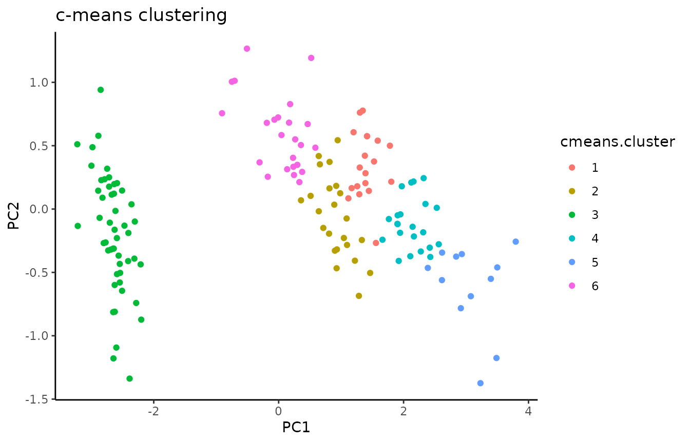

Comparing soft and hierarchical clusterings with element-centric similarity
Source:../analysis/vignettes/comparing-soft-and-hierarchical.Rmd
comparing-soft-and-hierarchical.RmdIn this vignette we will illustrate how element-centric similarity can be used to compare different kinds of clustering results: flat disjoint clusterings, flat overlapping clusterings, and hierarchical clusterings.
library(ClustAssess)
library(e1071)
library(dbscan)
library(ggplot2)
suppressPackageStartupMessages(library(dendextend))
# we will use the Iris dataset for this vignette
data = as.matrix(iris[,1:4])
df.iris = as.data.frame(prcomp(data)$x)
df.iris$species = iris$Species
ggplot(df.iris, aes(x=PC1, y=PC2, color=species)) +
geom_point() +
labs(title='Iris PCA')
Next, we cluster the data using three different approaches.
# a flat, disjoint clustering with DBscan
db.res = dbscan(data, eps=1)$cluster
df.iris$db.cluster = as.factor(db.res)
ggplot(df.iris, aes(x=PC1, y=PC2, color=db.cluster)) +
geom_point() +
labs(title='DBScan clustering')
# an overlapping clustering with soft k-means
cmeans.res = cmeans(data, centers=6)$membership
# get the strongest cluster assignment for each observation to plot
# but we will still use the soft cluster assignments to calculate ECS
df.iris$cmeans.cluster = as.factor(apply(cmeans.res, 1, which.max))
ggplot(df.iris, aes(x=PC1, y=PC2, color=cmeans.cluster)) +
geom_point() +
labs(title='c-means clustering')
# a hierarchical clustering
distances = dist(data, method='euclidean')
hc.res = hclust(distances, method='complete')
# plot the resulting dendrogram
node.colors = c('blue', 'red', 'green')
hc.res %>% as.dendrogram() %>%
set("leaves_pch", 19) %>%
set("leaves_cex", 0.5) %>%
set("leaves_col", node.colors[df.iris$species]) %>%
plot(main='Complete linkage hierarchical clustering', leaflab='none')
Now, we will compare the clustering results using element-centric similarity. ECS allows us to compare different kinds of clustering results, including the overlapping clustering and the hierarchical clustering we just calculated. The results tell us how similarly each observation was clustered by the two methods; the higher the ECS, the more similar the clustering of that observation.
# which observations are clustered more similarly?
# first compare flat disjoint and flat soft clusterings
df.iris$dbscan.cmeans.ecs = element_sim_elscore(db.res,
cmeans.res)
ggplot(df.iris, aes(x=PC1, y=PC2, color=dbscan.cmeans.ecs)) +
geom_point() +
labs(title='DBScan vs c-means similarity')
mean(df.iris$dbscan.cmeans.ecs)
#> [1] 0.4675256
# next compare flat disjoint and hierarchical disjoint clusterings
df.iris$dbscan.hc.ecs = element_sim_elscore(db.res,
hc.res)
ggplot(df.iris, aes(x=PC1, y=PC2, color=dbscan.hc.ecs)) +
geom_point() +
labs(title='DBScan vs hclust similarity')
mean(df.iris$dbscan.hc.ecs)
#> [1] 0.5875193
# finally compare flat soft and hierarchical disjoint clusterings
df.iris$cmeans.hc.ecs = element_sim_elscore(cmeans.res,
hc.res)
ggplot(df.iris, aes(x=PC1, y=PC2, color=cmeans.hc.ecs)) +
geom_point() +
labs(title='c-means vs hclust similarity')
mean(df.iris$cmeans.hc.ecs)
#> [1] 0.614915Session info
sessionInfo()
#> R version 4.1.0 (2021-05-18)
#> Platform: x86_64-pc-linux-gnu (64-bit)
#> Running under: Debian GNU/Linux 10 (buster)
#>
#> Matrix products: default
#> BLAS: /usr/lib/x86_64-linux-gnu/blas/libblas.so.3.8.0
#> LAPACK: /usr/lib/x86_64-linux-gnu/lapack/liblapack.so.3.8.0
#>
#> locale:
#> [1] LC_CTYPE=en_GB.UTF-8 LC_NUMERIC=C
#> [3] LC_TIME=en_GB.UTF-8 LC_COLLATE=en_GB.UTF-8
#> [5] LC_MONETARY=en_GB.UTF-8 LC_MESSAGES=en_GB.UTF-8
#> [7] LC_PAPER=en_GB.UTF-8 LC_NAME=C
#> [9] LC_ADDRESS=C LC_TELEPHONE=C
#> [11] LC_MEASUREMENT=en_GB.UTF-8 LC_IDENTIFICATION=C
#>
#> attached base packages:
#> [1] stats graphics grDevices utils datasets methods base
#>
#> other attached packages:
#> [1] dendextend_1.15.2 ggplot2_3.3.5 dbscan_1.1-10 e1071_1.7-9
#> [5] ClustAssess_0.3.0
#>
#> loaded via a namespace (and not attached):
#> [1] Rcpp_1.0.8 lattice_0.20-45 class_7.3-20 assertthat_0.2.1
#> [5] rprojroot_2.0.2 digest_0.6.29 foreach_1.5.2 utf8_1.2.2
#> [9] R6_2.5.1 evaluate_0.14 highr_0.9 pillar_1.7.0
#> [13] rlang_1.0.1 rstudioapi_0.13 jquerylib_0.1.4 Matrix_1.4-0
#> [17] rmarkdown_2.11 pkgdown_2.0.2 textshaping_0.3.6 desc_1.4.0
#> [21] labeling_0.4.2 stringr_1.4.0 igraph_1.2.11 munsell_0.5.0
#> [25] proxy_0.4-26 compiler_4.1.0 xfun_0.29 pkgconfig_2.0.3
#> [29] systemfonts_1.0.3 htmltools_0.5.2 tidyselect_1.1.1 tibble_3.1.6
#> [33] gridExtra_2.3 codetools_0.2-18 fansi_1.0.0 viridisLite_0.4.0
#> [37] crayon_1.4.2 dplyr_1.0.7 withr_2.4.3 grid_4.1.0
#> [41] jsonlite_1.7.3 gtable_0.3.0 lifecycle_1.0.1 DBI_1.1.2
#> [45] magrittr_2.0.2 scales_1.1.1 cli_3.1.1 stringi_1.7.6
#> [49] cachem_1.0.6 farver_2.1.0 viridis_0.6.2 fs_1.5.2
#> [53] bslib_0.3.1 ellipsis_0.3.2 ragg_1.2.1 vctrs_0.3.8
#> [57] generics_0.1.2 iterators_1.0.13 tools_4.1.0 glue_1.6.0
#> [61] purrr_0.3.4 fastmap_1.1.0 yaml_2.2.2 colorspace_2.0-2
#> [65] memoise_2.0.1 knitr_1.37 sass_0.4.0